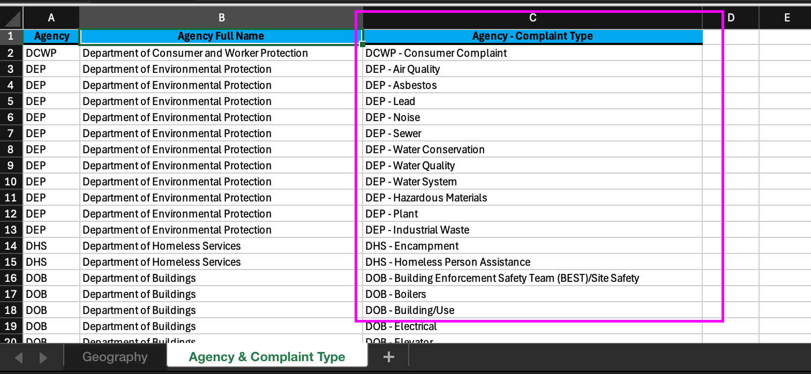
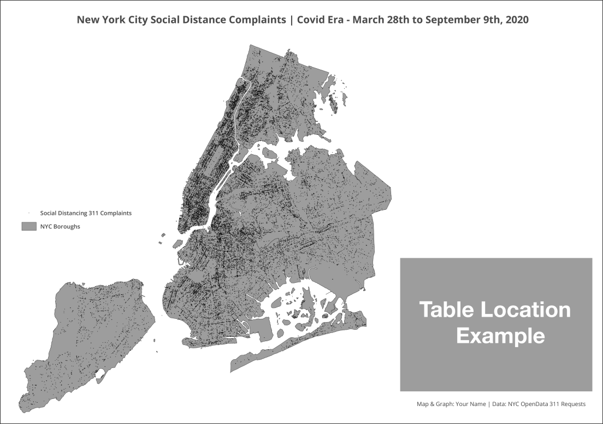

Class 3 Assignment: Mapping 311 NYC Data - Latitude-Longitude > Points > Counts & Rates > Map + Table Design
Spring 2026 | UENV 3200 - CRN 11009 + UURB 3210 - CRN 111008
🧭 Assignment 3 — NYC 311 Points + Geographic Coordinate Systems (GCS)

This week’s class session and independent assignment will encompass the following concepts, amongst related others:
📢 Class 3 Lecture Recording
Before proceeding to your work on the class 3 assignment, pause and watch the lecture recording. In addition to Class 3 fundamentals, both terminology and some software items are discussed. Note that the lecture is titled ‘lecture 2’ although it is designed for class 3 content.
👁️🗨️ Visual Analogies for remembering Latitude vs Longitude:
- Lat/Lon points are determined by angular degree measurements based on a mathematical point at center of earth sphere (black dot) before they become points on a flat map:

- Latitude is analogous to rungs or steps on a ladder:

- Longitude is analogous to telephone pole stakes running east to west:

General Course Orientation Items for Week 3 | Class 3
📖 Class 3 Readings
Note The Class 3 content quiz (opens Monday 02/16/2026 7AM) will features 10 questions covering content in the readings noted below.
🗂️ Part A — Get NYC 311 data (CSV)
✅ Part A Steps
In the following assignment steps the NYC’s 311 Service Requests for Covid Social Distancing is utilized as an example dataset. Generally the same steps apply to all 311 themes available. For this assignment, choose a theme and a time period filter for your own assignment submission.
There are many 311 data themes; spend some time choosing one that you find engaging and you want to see spatialized via this assignment.
- In order to choose a theme, you must obviously know which themes are available. In the 311 dataset, themes are organized by
Complaint Typefirst; with subcategories that are listed asDescriptor. A third column is provided for the theme preview titledUnique Key, which in this case is a count of records perComplaint Type+Descriptor. To no one’s surprise,Noise - Residential+Loud Music/Partyhas the largest count at1,665,443records dating back to 2010.
At the following link you can download an Excel file that will list the Complaint Type and the agency that handles the Complaint Type:

To access the actual 311 data, the following link is utilized as the start point:
The following mapping assignment utilizes the spatial distribution of Social Distancing complaints as an assignment example, alongside an aggregate count per NYC borough. By visualizing both the disaggregate data points and aggregate count, the final product allows a meaningful rate in addition to spatial distribution alone.
To Start, first acquire the data in
.csvformat, then map it against the 5 boroughs in NYC. The Latitude and Longitude spatial attributes in the dataset will be used to transform the tabular dataset into a spatial dataset with geometry -.csvto.shp. Along the way, a total complaint count per borough will be determined, and finally a rate of complaint per borough. A map product is then developed that shows the pattern of the data and charts the relative complaint count per borough.To start, the following filter query and rate formula will be utilized in the assignment:
- To filter the 311 data just the Descriptor will be used, set to
Social Distancing. - In order to determine a square mile per borough:
shape_area * 0.00000003587006428 = square mile
- To filter the 311 data just the Descriptor will be used, set to
For filtering, a combination of Complaint Type and Descriptor can be utilized effectively to narrow results. In the following steps, images and video, a slightly older version of the 311 platform is shown. The interface has been updated recently and the filter tools are now located as a default at the bottom of the browser, under the dataset. All the same principles apply; just note the interface is different in some respects.
Data Acquisition:
- Navigate browser to NYC OpenData:

- Scroll down to the 311 Dataset link and click:

- Note that there are multiple 311 Service Request instances. Make sure to select the
Dataset, notData Lensinstance:

- Once selected, continue with
View Databutton selection:

- Apply a Filter based on query
Descriptor is Social Distancing:

- The resulting subselection would be 62,000 + records with the
Social DistancingDescriptor attribute:

- Download the subselection
.csvto a folder directory for Part II. Accept the default naming convention of the.csv:

- If desired, open the
.csvin Excel and navigate to right-end of the file. Here you will seeLatitudeandLongitude. These two columns will be utilized to read in the location data for the creating of geometry (points) within QGIS:

- Finally, download the Class3 map data folder (named c2). Here you will find the borough geometry, and a backup
.csvof the 311 data as of 01/29/21. Only use this.csvas testing data, not data for the assignment per se:

Data Acquisition Review:
Before proceeding to QGIS, make sure to review your filter conditions. Also if you are stuck on the filtering process, review the video below in this section.
Filter Condition 1: What will be the time dimension (
Create Date) of your mapping? Is a certain time duration important to the mapping, i.e. events tied to a certain NYC policy, natural disaster or weather period?Filter Condition 2: What will be the 311
Complaint Typetheme of your mapping?Filter Condition 3: As a further option, consider a filter on the
Descriptordimension to narrow yet further the return requests.Page/paper orientation and size: will your final output be landscape or portrait orientation? Either letter or tabloid, landscape or portrait is acceptable for this second mapping assignment.
To help with the filter conditions, review this short video below (Password = 311):

🧱 Part B — Build your QGIS project (points from lat/lon)
✅ Part B steps - build your QGIS project (points from lat/lon)
To start, Open QGIS and point the Data Source Manager to the .csv service requests utilizing the Delimited Text data source option. Make sure to populate the tool as seen below and rename the layer simply as 311_SR:

- Next, load the borough boundary shapefile, and position the service requests atop the borough boundary and symbolize so that the the points are approximately
0.25size in black, and the boroughs are a light neutral color of your choice:

There will be some stray points outside NYC area. These are incorrect lat/lon data points wherein the lat/lon was recorded incorrectly in the 311 dataset. Disregard these points. Also now is the time to begin to save your .qgs file on a regular basis in order to avoid duplicate work in the event of a software crash.
You may notice that your data ‘shape’ is horizontally elongated compared to the image above. This is due to the fact that the data is cast within wgs84 coordinate system. We can change that easily so that the ‘shape’ is much more accurate. To do so, we will utilize the map projection designed for the NYC area (State Plane system). First click on the CRS button, lower right of Map Canvas. Once done, search for 3104 which is a short code for the correct map projection for NYC. Then click Add at bottom of tool window. The shape of the data will automatically update. This is a type of ‘on the fly’ projection; we are changing the Map Canvas coordinates, but we are leaving the actual .prj file on each of the data sources unchanged. This is a ‘quick and dirty’ yet efficient cartographic kludge (hack):


You may run into a CRS projection issue with the polygon feature for NYC boroughs. IF your features disappear from your Map Canvas as you perform an ‘on the fly’ projection for the data frame, the following video will solve this problem:
- Addressing the Missing CRS dilemma:

Next, we want know how many complaints exist per borough expressed in the following structured question:
- Which borough has the most ‘Social Distancing’ public complaint reports due to Covid-19 distancing mandates in New York City and State ?
- Which borough has the highest rate of public complaint reports based on square area (square miles) ?
For this second question, perhaps a more insightful query would be rate of public complaints per 10K population. Certainly we can answer this question also, but we would need population data which we will cover in depth in Class 5 - Thematic Mapping.
🧮 Part C — Count 311 points per borough (Points in Polygon)
✅ Part C steps - Count 311 points per borough (Points in Polygon)
To start, Utilize the Count points in polygon overlay operation to get a total count of complaint records per borough. This tool is available from the Main Menu:
- Vector > Analysis Tools > Count Points in Polygon

- Populate the tool with the polygon and points ordered as follows:

- This operation will result in a new temporary layer
COUNT. Immediately export this new layer as a.shpinto your working directly, entitled311_borough:


.shpSee that the new .shp now contains a field column entitled NUMPOINTS in integer format (int8) - this is the count per borough.
- Next, calculate the complaints per borough and the rate of complaints per borough in the attribute table of the new
311_borough.shp. To do this navigate to the Toolbar and choose the Field Calculator tool:

Make sure
311_boroughis active in the layers panel. Create a new fieldsq.mileand populate with the following formula, using Fields and Values > shape_area dropdown:shape_area * 0.00000003587006428

This formula takes the current areal quantity in sq. feet and converts it to a sq. mile - a unit that is more appropriate to the size of the borough polygons.
- To complete, save the attribute addition; Toggle Editing to the off position and Save:

With the number of complaints per borough (
NUMPOINTS) and the sq. miles of each borough (sq.mile), a rate normalized to sq. area can be achieved. Again, open the Field Calculator and use the same process as above to Create a new field, but this time name the fieldrate.sq.miand use the following formula:"NUMPOINTS" / "sq.mile"Again, save the attribute addition; Toggle Editing to the off position and Save.
Open the attribute table and view the results. Its clear the rate of complaints per sq. mile in Manhattan is highest, even as its total count is lower than Brooklyn. The influence of the outer neighborhoods in Brooklyn is likely bringing down the rate in Brooklyn as a whole. In other words, the most populated areas of Brooklyn are likely on par with the rate of complaints per sq. mile as Manhattan.

If you are having problems with the Field Calculator at this stage of the assignment, the following video will walk through each step and may be helpful to get back on track:
- Creating Sq Miles & Rates with QGIS Field Calculator:

📏 Part C Area + Rate Recap — Creating borough area + rate fields (Field Calculator)
Goal: end with Borough, Raw Count, and Rate.
C1 — Area in square miles (or your class standard)
C2 — Rate per square mile
Deliverable checkpoint
🗺️ Part D — Map styling (points + borough context)
✅ Part D Checklist
Cartographic Design Suggestions:
- Vertical Ordering
- You will often want to toogle the stacking order of the various elements on the map page. For instance, negative space surrounding the map elements may partially obscure the graph and vice versa. You can toogle one atop the other in a desired order from the Actions Toolbar:

- Points Size + Opacity
- As there will be 60K points on this map, consider ramping down opacity and keep small symbol size. For the example map, opacity of points has been set at approx. 75%, and the size 0.25.
🧾 Part E — Build a 3-column borough table in the Map Layout
The goal a clean layout table that augments the cartographic design of the 311 points and borough boundaries.
E1 — Prepare the table fields (clean + readable)
E2 — Insert an attribute table into the Layout
E3 — Layout finishing elements (minimum required)
Deliverable checkpoint
📤 Submission Template:
- Review the Assignment Example before finalizing your assignment. You are encouraged to experiment and choose a different approach than the example, but do indeed include all elements found in the example. Upload your PDF export to CANVAS assignment 3 submission location.

▶️ Video Guides:
- Addressing the Missing CRS delimma:
- Creating Sq Miles & Rates with QGIS Field Calculator:
311 Data Filtering:
- Use Password = 311 to access video:
⭐ Assignment References:
🧮 Grading Rubric — Assignment 3 (Percent Weights)
| Category | Weight | Excellent (Full Credit) | Satisfactory | Needs Work |
|---|---|---|---|---|
| Data Selection & Filtering | 20% | Complaint type and time window are clearly defined, purposeful, and appropriate to the analysis | Filters applied but rationale is vague or weak | Filters missing, arbitrary, or unclear |
| Point Mapping from Latitude / Longitude | 20% | CSV correctly loaded as point geometry; correct X/Y order; CRS appropriately set; points align with NYC | Minor CRS or loading issues but points generally correct | Incorrect coordinate order, CRS misuse, or misaligned points |
| Spatial Aggregation (Points → Boroughs) | 20% | Borough aggregation correctly performed; counts accurately reflect point distribution | Aggregation mostly correct with minor errors | Aggregation incorrect or missing |
| Rate Calculation & Attribute Table Structure | 20% | Area and rate fields correctly calculated; values plausible; table fields clean and interpretable | Rate calculated but with minor formula or clarity issues | Rate missing, incorrect, or uninterpretable |
| Map Layout & Borough Table | 20% | Clear, readable layout with title, legend, and 3-column borough table (Borough, Count, Rate) | Layout present but cluttered or table formatting unclear | Layout incomplete, unreadable, or missing required table |
Important Notes - All percentage weights contribute to a 100% total. - Accuracy, clarity, and interpretability matter more than visual decoration.
📎 Additional References:
Additional Class 2 Spatial related data/readings/articles:
A comprehensive, contemporary take on all things NULL Island
A concise definition of bounding box often used in conjunction with lat/lon.
Strava’s fitness tracker heat map reveals the location of military bases
Often lat/lon pairings are expressed in DMS (degree, minute, second) as opposed to Decimal format which is necessary & standard for digital mapping. Find out more on the expression of DMS vs. Decimal format.
To follow, a short tutorial on Degree|Minute|Second conversion to Decimal lat/lon expression:

Further, you can make the DMS>Decimal Degrees and vice versa on a point-by-point basis using an online converter like the following:
https://www.fcc.gov/media/radio/dms-decimal